Swiss plugs and sockets
Swiss plugs have some considerable differences compared to other ones used in Europe. They're quite small and have a distinctive hexagonal shape with rounded corners; their size makes them similar to the Italian standard, but with an offset earth pin, making them polarised. Nowadays, plugs have to have insulating sleeves and sockets have to be recessed - however, this is a relatively recent change, so older items may still be found which don't have these safety features.
The standard rating for plugs and sockets is 10A, using round pins with a diameter of 4.0mm. 16A plugs, with rectangular pins, and three-phase 10A and 16A ones are also available and backwards compatible with 10A plugs, though not very common in domestic environments. Interestingly, the small size of these plugs means that it's possible to fit three Swiss sockets in the same space as a single Schuko one.
Note: the items currently shown in this page are older ones. All of them have a rating of 10A 250V.
T13 socket
T13 power sockets are the most common ones used nowadays, replacing the older non-recessed T12 standard. While modern plugs have insulating sleeves, recessed sockets make it impossible to receive an electric shock even from older ones where this sort of protection isn't present. Note that safety shutters aren't present, as they're not compulsory in Switzerland.
This specific socket, manufactured by Feller AG, has push-in wire terminals - a common feature on Swiss items. The socket is semi-modular, as it's mounted on a metal support frame with two screws. This frame can be replaced depending on the size of wall box in use. The round hole on the faceplate is standardised, so items from other manufacturers can be used.
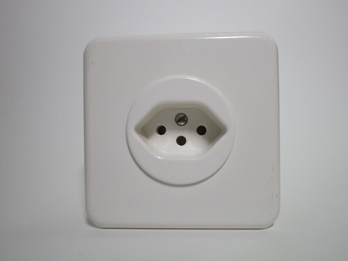 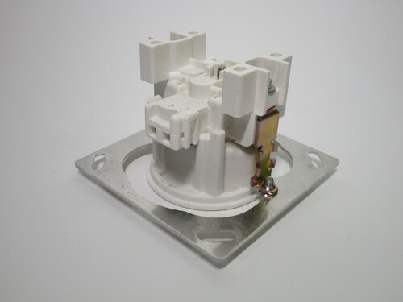 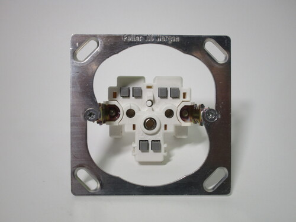{kind=link}
{kind=link}
{kind=link}
T12 plugs
These are two older models of T12 plug, the most common one used in Switzerland. As previously mentioned, these plugs have an offset earth pin, which means they're polarised: they can only be inserted in one way.
Due to their age, both of them don't have any sort of sleeving on the pins (a required feature since 2013). When used with T12 sockets this makes it possible to touch the pins of the plug while they're live; however, safety is assured with T13 sockets, as they're recessed. The installation of T12 outlets has been prohibited since 2017.
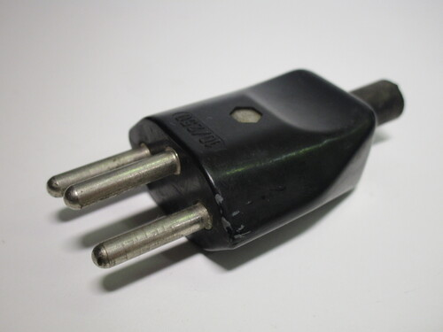 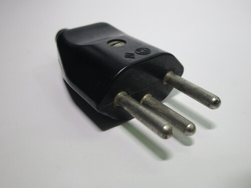 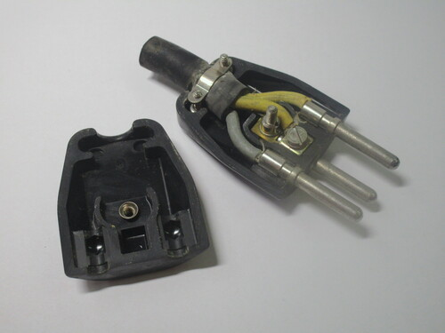{kind=link}
{kind=link}
{kind=link}
The two plugs are very similar, however, while the first one features a cord grip, the second one does not. However, the latter does have some ridges to make it easier to plug and unplug.
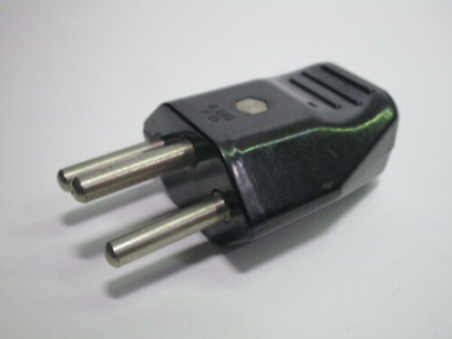 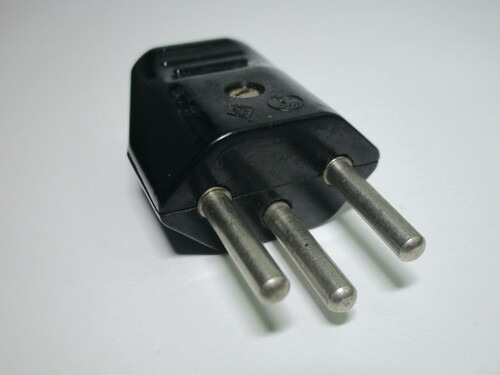 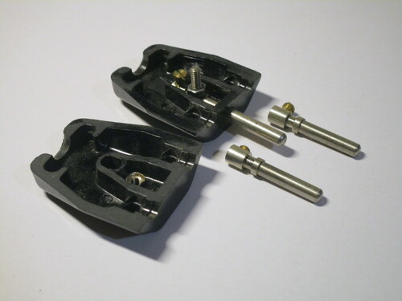{kind=link}
{kind=link}
{kind=link}
Multiway adaptor
This is a common type of Swiss 3-way adaptor. It has recessed sockets (T13), without shutters, and a plug without sleeved pins.
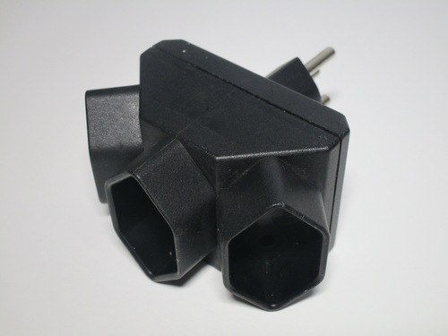 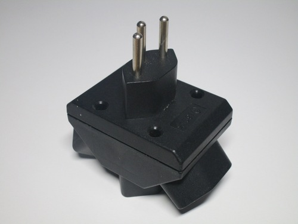 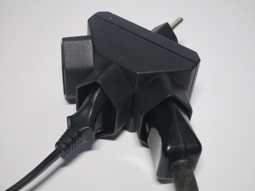{kind=link}
{kind=link}
{kind=link}
T14 plug
This style of plug was the one used in Switzerland before the creation of the modern T12 types. Its distinguishing feature is that the sockets have a pin for the earth connection, rather than the plug, which thus has to have a matching hole.
The reason why this system was abandoned was that it was possible to insert an earthed plug into an old non-earthed socket, thus defeating the earth connection.
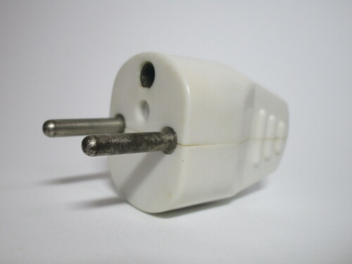 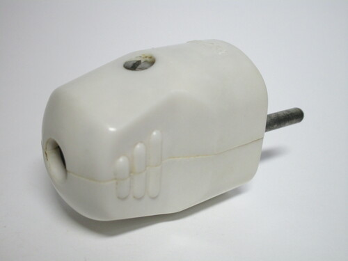 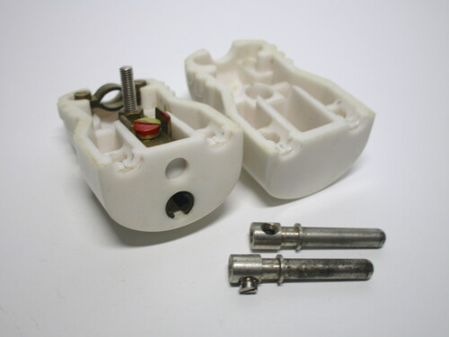{kind=link}
{kind=link}
{kind=link}
T12/14 Resista socket
For a while after the switch to the T12 standard, hybrid sockets were available, which worked with both old and new earthed plugs. This is an example of a connector socket version of one, from Resista, a Swiss company manufacturing highly resistant plugs and sockets. A matching plug is also shown.
As previously mentioned, T14 plugs required the socket itself to have an earth pin, a very unusual feature only otherwise found on French outlets. However, despite the somewhat similar look, the two are entirely incompatible. Of course, as this model is a hybrid one, it also has an earth hole for T12 plugs and a slightly different recess to account for the wider (but much thinner) shape of them.
Both the plug and socket are built very well, with a rubber outer casing, and could resist being used in harsh environments. The plug is of the T12 kind and, given its age, doesn't have any insulating sleeves.
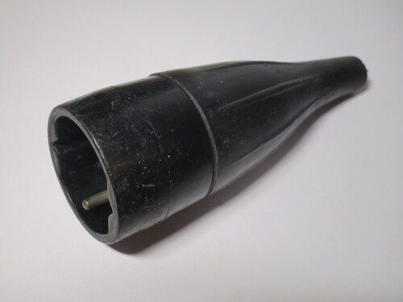 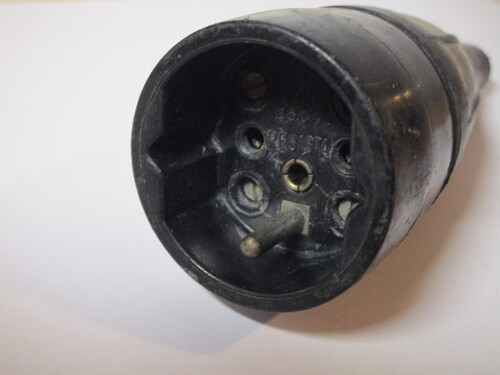 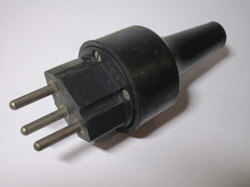{kind=link}
{kind=link}
{kind=link}